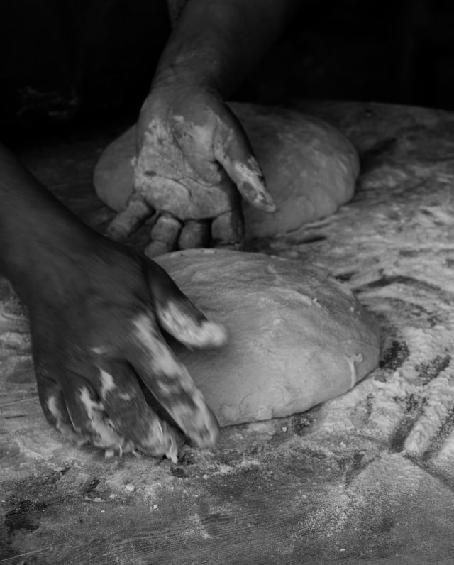

A small shop on Mill Street
Two bakers.
One oven.
Little Levain started in a home kitchen in 2019. We moved into the old grocer’s shop three years later, and still mix and shape every dough by hand.
Our wheat and rye come from a farm 40 km away. They’re stone-milled the week we use them, then given a long, slow fermentation here.
A morning in the bakehouse →
Find us
Just by the old station.
14 Mill Street. Look for the green door and the bikes outside.
There are a few seats by the window, a bench outside, and room for a pram. The shop has a step-free entrance.
Well-behaved dogs are welcome outside.
Opening hours
| Monday–Tuesday | Closed |
|---|---|
| Wednesday–Friday | 7am–2pm |
| Saturday | 7am–2pm |
| Sunday | 8am–1pm |
Pastry from opening. Sourdough from 7:30am (8am on Sunday). We may sell out earlier.
Waste less
A loaf for tomorrow, too.
Keep bread cut-side down on a board for the first day, then in a paper bag. Please bring your own bag if you have one. Yesterday’s bread goes to the community kitchen.
About this example & photography
Little Levain is fictional. Its address, opening hours and menu are sample content for a working font optimization demo; it does not take orders.
Photographs from Pexels: bread by Marta Dzedyshko, croissants by Julia Filirovska, and dough by Elif Taşlı, under the Pexels license.